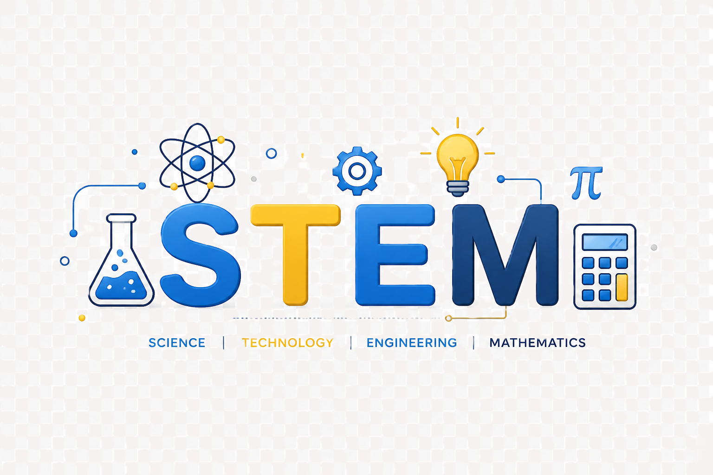

Weekly Learning
Students learn through consistent weekend STEM sessions.
Beginner Friendly
Lessons are simple, clear, and designed for young learners.
Hands-On Fun
Activities include coding, robotics, engineering, and creative problem-solving.
Helping young students explore STEM through creativity, coding, robotics, and hands-on learning.
Hi, I am Praveen, a high school student at Walnut Grove High School and the founder of Learning Nest. My interest in STEM grew through robotics, engineering, coding, and hands-on problem solving. As a Robotics Team Captain, I have learned how teamwork, creativity, and persistence can turn ideas into real projects.
I started Learning Nest to help younger students explore STEM in a fun, simple, and encouraging way. Through weekend classes and hands-on activities, students can build confidence while learning beginner concepts in coding, robotics, engineering, math, and science.
My goal is to make STEM feel less intimidating and more exciting for kids. Learning Nest is built on consistency, curiosity, and community service—helping students learn with ease while discovering what they are capable of creating.

Students learn through consistent weekend STEM sessions.
Lessons are simple, clear, and designed for young learners.
Activities include coding, robotics, engineering, and creative problem-solving.